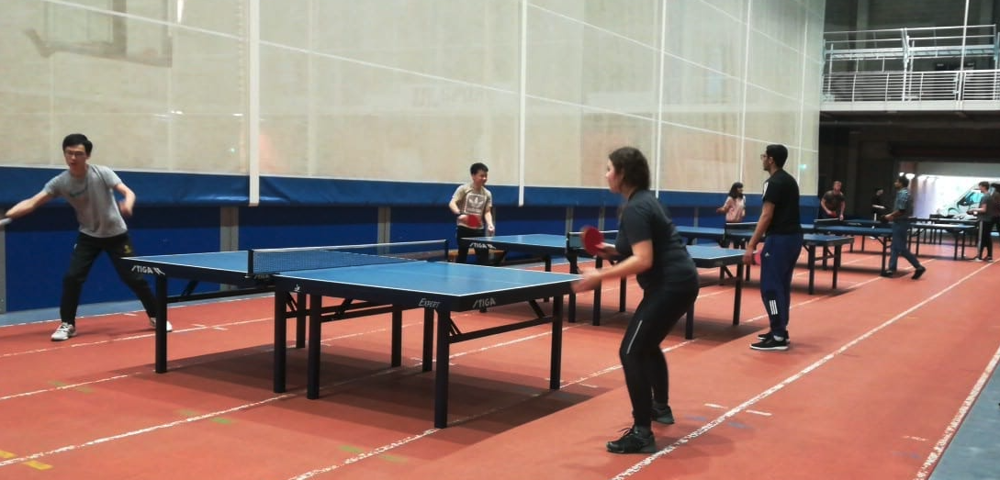

Where to play in Ireland?
List of places or clubs that you can play
Here we have the best-rated locations of the six main cities in the country!
Dublin
Loop Table Tennis Club
One of the best rated places with 5 stars over 52 reviews on Google! According to their website, the club was founded in 2015 by Na Ning, a professional player in his native China. Regardless if you are an advanced or casual player, you are welcome to join them!
 Loop Table Tennis Club, Ardscoil La Salle, Raheny Rd, Donaghmede, Raheny, Dublin, D05 Y132, Ireland.
Loop Table Tennis Club, Ardscoil La Salle, Raheny Rd, Donaghmede, Raheny, Dublin, D05 Y132, Ireland.
Cork
Beech Hill Table Tennis Club
A friendly table tennis club in the heart of the city known for its incredible group of Paralympic players. They are engaged in many competitions, and you can play if you are a beginner!
 Terence MacSwiney Sports Hall, Hollyhill Lane, Knocknaheeny, Cork, Ireland, Eircode: T23W880
Terence MacSwiney Sports Hall, Hollyhill Lane, Knocknaheeny, Cork, Ireland, Eircode: T23W880
Galway
CBC Table Tennis Galway
The Commercial Boat Club in Galway is a friendly place to play.
 Waterside, Woodquay, Galway, Ireland, H91 FH61
Waterside, Woodquay, Galway, Ireland, H91 FH61
Limerick
UL Limerick Tennis Club
One of the most important colleges in Ireland has a club where everyone can join for fun or join the advanced players to engage in local and many other tournaments.
 University of Limerick, Limerick, Ireland, MCFH+7VWaterford
Table Tennis Stars Waterford
With years of expertise in the game, their passionate team is dedicated to providing a top-quality experience for players of all levels. From beginners to seasoned pros, they offer a space for skill development and friendly competition.
 Waterford Business Park, Ballynaneashagh, Waterford, X91 HW57, Ierland
Waterford Business Park, Ballynaneashagh, Waterford, X91 HW57, Ierland
Athlone
Athlone Table Tennis Club
A fun place to play regardless of your level and age. If you are around Athlone you should give it a go and meet the players!
 St Marys Hall, Northgate St, Athlone, Co. Westmeath
St Marys Hall, Northgate St, Athlone, Co. Westmeath